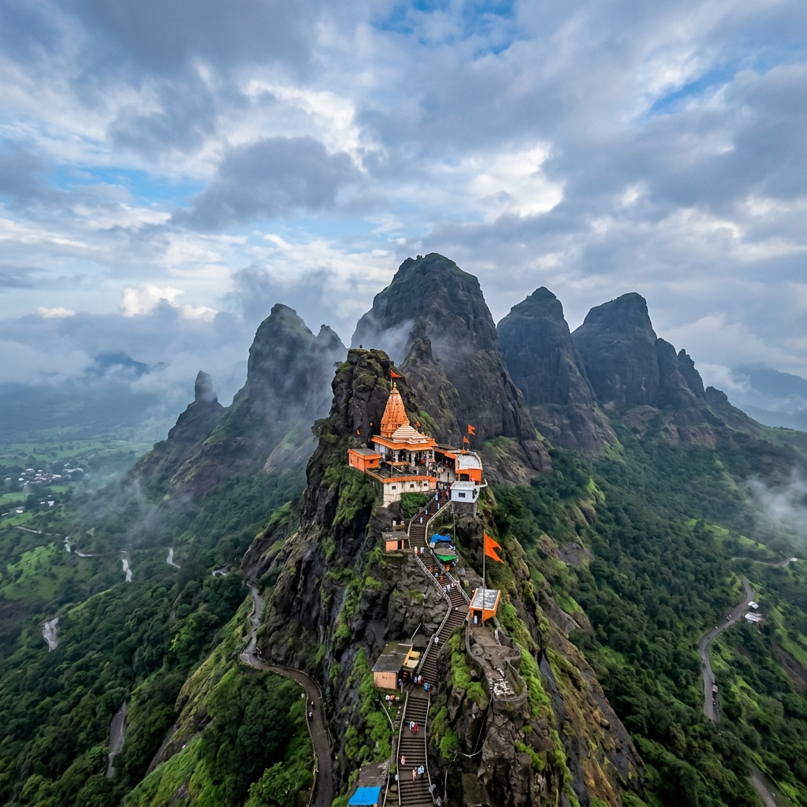

About Temple
Visiting Saptashrungi Temple feels like a powerful spiritual journey combined with a scenic hill experience. The temple is located high in the Sahyadri ranges, and reaching it gives a sense of moving closer to something sacred. Whether you climb the steps or use the road/ropeway, the surroundings of mountains and fresh air create a calm and refreshing atmosphere. It’s especially meaningful for those who seek strength and blessings from a powerful goddess form.
Scenic Hilltop
Sahyadri Ranges
Divine Blessing
Seeking Strength

History & Significance
Saptashrungi Temple is dedicated to Goddess Saptashrungi, a form of Goddess Durga, and is considered one of the important Shakti Peeths in Maharashtra. According to belief, the goddess resides in the seven peaks (sapta-shrungi) of the mountain, which gives the temple its name. The idol of the goddess is self-manifested and has been worshipped for centuries. It holds strong importance for devotees seeking protection, courage, and divine guidance.
Shakti Peeth
Important Shrine
Sapta Shrungi
Seven Mountain Peaks
What Makes It Unique
Discover the unique factors that set Saptashrungi Temple apart from other shrines.


Travel Guide
Convenient ways to reach the temple from major hubs in Maharashtra.
Option 1: Rail & Road Hub (Nashik)
The temple is located about 60 km from Nashik and can be reached within 1.5–2 hours by road. You can take a train to Nashik Station and hire a taxi or catch a state bus directly to the base village Vani.
Nashik: 1.5 - 2 hours by roadOption 2: Direct Drive from Major Cities
From Mumbai, it is around 250 km (5–6 hours drive), and from Pune around 300 km (6–7 hours drive) via the National Highway and Vani road.
Mumbai (250 km) | Pune (300 km)Option 3: Public Transport Buses
MSRTC operates regular public bus services from Nashik Central Bus Stand (CBS) directly to Saptashrungi Garh on a daily schedule.
Essential Information
Important details regarding timings, queues, and ideal visiting slots.
Timings & Crowds
Opens from 5:00 AM to 9:00 PM. Early morning visits are recommended for comfortable weather and to beat heavy weekend crowds.
Entry & Ropeway
General entry for darshan is free. Separate ticket rates apply for the ropeway transit system and special pooja bookings.
Best Time to Visit
October to March is ideal. Monsoons are extremely beautiful and turn the mountains lush green, though trekking can be slippery.
Location & Coordinates
Near Vani town, Nashik district, Sahyadri mountain range, Maharashtra, India